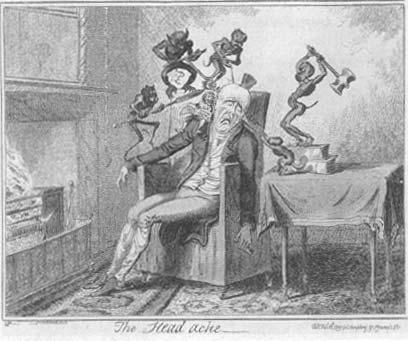
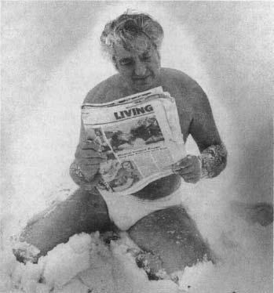

In Joseph Heller’s classic novel about World War II, Catch-22, the antihero, Yossarian, has an unlikely argument with someone about the nature of God. Unlikely because they are both atheists, which would presumably lead to agreement about the subject. However, it turns out that while Yossarian merely does not believe in the existence of a God and is rather angry about the whole concept, the God that she does not believe in is one who is good and warm and loving, and thus she is offended by the vehemence of his attacks.
In Joseph Heller’s classic novel about World War II, Catch-22, the antihero, Yossarian, has an unlikely argument with someone about the nature of God. Unlikely because they are both atheists, which would presumably lead to agreement about the subject. However, it turns out that while Yossarian merely does not believe in the existence of a God and is rather angry about the whole concept, the God that she does not believe in is one who is good and warm and loving, and thus she is offended by the vehemence of his attacks.
“How much reverence can you have for a Supreme Being who finds it necessary to include such phenomena as phlegm and tooth decay in His divine system of creation? What in the world was running through that warped, evil, scatological mind of His when He robbed old people of the power to control their bowel movements? Why in the world did He ever create pain?”
“Pain?” Lieutenant Scheisskopf’s wife pounced upon the word victoriously. “Pain is a useful symptom. Pain is a warning to us of bodily dangers.”
“And who created the dangers?” Yossarian demanded. He laughed caustically. “Oh, He was really being charitable to us when He gave us pain! Why couldn’t He have used a doorbell instead to notify us, or one of his celestial choirs? Or a system of blue-and-red neon tubes right in the middle of each person’s forehead. Any jukebox manufacturer worth his salt could have done that. Why couldn’t He?”
“People would certainly look silly walking around with red neon tubes in the middle of their foreheads.”
“They certainly look beautiful now writhing in agony or stupefied with morphine, don’t they?”
Unfortunately, we lack neon lights in the middle of our foreheads, and in the absence of such innocuous signs, we probably do need pain perception. Pain can hurt like hell, but it can inform us that we are sitting too close to the fire, or that we should never again eat the novel item that just gave us food poisoning. It effectively discourages us from trying to walk on an injured limb that is better left immobilized until it heals. And in our westernized lives, it is often a good signal that we had better see a doctor before it is too late. People who congenitally lack the ability to feel pain (a condition known as pain asymbolia) are a mess; because they can’t feel pain when they step down with too much force, their feet may ulcerate, their knee joints may disintegrate, and their long bones may crack; they burn themselves unawares; in some cases, they even lose a toe without knowing it.
Pain is useful to the extent that it motivates us to modify our behaviors in order to reduce whatever insult is causing the pain, because invariably that insult is damaging our tissues. Pain is useless and debilitating, however, when it is telling us that there is something dreadfully wrong that we can do nothing about. We must praise the fact that we have evolved a physiological system that lets us know when our stomachs are empty. Yet at the same time we must deeply rue our evolving physiological system that can wrack a terminal cancer patient with unrelenting pain.
Pain, until we get the lights on our foreheads, will remain a necessary but highly problematic part of our natural physiology. What is surprising is how malleable pain signals are—how readily the intensity of a pain signal is changed by the sensations, feelings, and thoughts that coincide with the pain. One example of this modulation, the blunting of pain perception during some circumstances of stress, is the subject of this chapter.
The Basics of
Pain Perception
The sensation of pain originates in receptors located throughout our body. Some are deep within the body, telling us about muscle aches, fluid-filled, swollen joints, or damage to organs. Or even something as mundane as a distended bladder. Others, in our skin, can tell us that we have been cut, burned, abraded, poked, or compressed.* Often, these skin receptors respond to the signal of local tissue damage. Cut yourself with a paring knife, and you will slice open various cells of microscopic size that then spill out their proverbial guts; and, typically, within this cellular soup now flooding out of the area of injury is a variety of chemical messengers that trigger pain receptors into action. The tissue injury also triggers an influx of cells of the immune system, which are there to scarf up and dispose of those sliced-up cells. The swelling around the injury site because of this infiltration is what we call inflammation, and those inflammatory cells release chemicals that make pain receptors more sensitive.

George Cruikshank, The Headache, hand-colored etching, 1819.
Some pain receptors carry information only about pain (for example, the ones responding to cuts); others carry information about both pain and everyday sensations. How are the two differentiated? By intensity. For example, by way of various tactile receptors on my back, I am greatly pleased to have my back scratched and rubbed by my wife. However, as evidence that there are limits to all good things, I would not at all enjoy it if she vigorously scratched my back with coarse sandpaper. Similarly, we may be pleased to have our thermal receptors stimulated by warm sunlight but not by boiling water. Sometimes pain consists of everyday sensations writ large.
Regardless of the particular type of pain and the particular receptor activated, all these receptors send nerve projections to the spinal cord. This can activate a spinal reflex, where spinal neurons rapidly send commands to your muscles (and thus, for example, you jerk your finger away from the flame). Information about the painful stimulus is also sent up to the brain (a lot more on this later).
Sensory Modulation of
Pain Perception
A striking aspect of the pain system is how readily it can be modulated by other factors. The strength of a pain signal, for example, can depend on what other sensory information is funneled to the spine at the same time. This, it turns out, is why it feels great to have a massage when you have sore muscles. Chronic, throbbing pain can be inhibited by certain types of sharp, brief sensory stimulation.
The physiology behind this is one of the most elegant bits of wiring I know of in the nervous system, a circuit sorted out some decades ago by the physiologists Patrick Wall and Ronald Melzack. It turns out that the nervous projections—the fibers carrying pain information from your periphery to the spinal cord—are not all of one kind. Instead, they come in different classes. Probably the most relevant dichotomy is between fibers that carry information about acute, sharp, sudden pain and those that carry information about slow, diffuse, constant, throbbing pain. Both project to spinal cord neurons and activate them, but in different ways (see part A of the figure 190).
Two types of neurons found in the spinal cord are being affected by painful information (see part B of the illustration). The first (X) is the same neuron diagrammed before, which relays pain information to the brain. The second neuron (Y) is a local one called an interneuron. When Y is stimulated, it inhibits the activity of X.
The Wall-Melzack model of how pain information is passed to the brain, and how it can be modulated by the brain. (A) A neuron (X) in the spinal cord sends a signal to the brain that something painful has happened, once it is stimulated by a pain fiber. Such pain fibers can carry information about sudden pain or slow, diffuse pain. (B) A more realistic version of how the system actually works, showing why sudden and slow pain information is differentiated. In the case of sudden pain, the sudden pain fiber stimulates neuron X, causing a pain signal to be relayed to the brain. The sudden pain fiber also stimulates an interneuron (Y) that inhibits neuron X, after a brief delay. Thus, neuron X sends a pain signal to the brain for only a short time. In contrast, the slow pain fiber stimulates neuron X and inhibits interneuron Y. Thus, Y does not inhibit X, and X continues to send a pain signal to the brain, producing a slow, diffuse pain. (C) Both stimulatory and inhibitory fibers come from the brain and send information to neuron X, modulating its sensitivity to incoming pain information. Thus, the brain can sensitize neuron X to a painful signal, or blunt its sensitivity.
As things are wired up, when a sharp, painful stimulus is felt, the information is sent on the fast fiber. This stimulates both neurons X and Y As a result, X sends a painful signal up the spinal cord, and an instant later, Y kicks in and shuts X off. Thus the brain senses a brief, sharp burst of pain, such as after stepping on a tack.
By contrast, when a dull, throbbing pain is felt, the information is sent on the slow fiber. It communicates with both neurons X and Y, but differently from the way it does on the fast fiber. Once again the X neuron is stimulated and lets the brain know that something painful has occurred. This time, however, the slow fiber inhibits the Y neuron from firing. Y remains silent, X keeps firing, and your brain senses a prolonged, throbbing pain, the type you’d feel for hours or days after you’ve burned yourself. The pain physiologist David Yeomans has framed the functions of the fast and slow fibers in a way that fits perfectly with this book: what the fast fibers are about is getting you to move as quickly as possible (from the source of the piercing pain). What the slow fibers are about is getting you to hunker down, immobile, so you can heal.
The two classes of fibers can interact, and we often intentionally force them to. Suppose that you have some sort of continuous, throbbing pain—sore muscles, an insect bite, a painful blister. How can you stop the throbbing? Briefly stimulate the fast fiber. This adds to the pain for an instant, but by stimulating the Y interneuron, you shut the system down for a while. And that is precisely what we often do in all of those circumstances. Experiencing a good vigorous mauling massage inhibitsa the dull throbbing pain of sore muscles for a while. An insect bite throbs and itches unbearably, and we often scratch hard right around it to dull the pain. Or we’ll pinch ourselves. In all these cases, the slow chronic pain pathway is shut down for up to a few minutes.
This model has had important clinical implications. For one thing, it has allowed scientists to design treatments for people with severe chronic pain syndromes (for example, a patient who has had a nerve root crushed in his back). By implanting a little electrode into the fast pain pathway and attaching it to a stimulator on the person’s hip, they enable the patient to buzz that pathway now and then to turn off the chronic pain; works wonders in many cases.
Pain that Goes on
Longer than Normal
If someone pokes you over and over, you will continue to feel pain each time. Similarly, if you get an injury that causes days of inflammation, there are likely to be days of pain as well. But sometimes, something goes wrong with pain pathways somewhere between those pain receptors and your spine, and you feel pain long after the noxious stimulus has stopped or the injury has healed, or you feel pain in response to stimuli that shouldn’t be painful at all. Now you’ve got problems—allodynia, which is feeling pain in response to a normal stimulus.
Some versions of allodynia can arise down at the level of the pain receptors themselves. Recall how when there is tissue injury, inflammatory cells infiltrate into the area and release chemicals that make those local pain receptors more excitable, more easily stimulated. Now those inflammatory cells are pretty indiscriminate as to where they dump these chemicals, and some of them can leach over in the direction of receptors outside the area of injury, thereby making them more excitable. And suddenly the perfectly healthy tissue surrounding the injured area starts to hurt as well.
Allodynia can also occur when neurons in the pain pathway are injured. If nerve endings are severed near the pain receptors, those inflammatory cells release growth promoting factors that prompt the nerves to regenerate. Sometimes the regeneration is bollixed up so that the nerve endings rewire into a tangle called a neuroma, which tends to be hyperexcitable, sending pain signals from perfectly healthy tissue. And if the nerve projections carrying pain information are severed near the spine, this can lead to a cascade of inflammatory events that results in a hyperexcitable spinal cord. A mere touch now feels excruciating.
The Wall-Melzack pathway model explains another instance of allodynia, as seen in severe cases of both types of diabetes. As we saw in chapter 4, elevated levels of glucose in the bloodstream can increase the risk of atherosclerotic plaques, clogging up blood vessels. As a result, insufficient energy gets through those vessels, potentially damaging nerves that depend on that energy. In general it is the fast fibers, which take more energy to operate than the lower-maintenance slow fibers, that are damaged. Thus, the person loses the ability to shut down the Y interneuron in that pathway, and what would be a transient pain for anyone else becomes a constant throbbing one for a diabetic.
No Brain, No Pain
We started with pain receptors scattered all over the body, and have gotten as far as the spinal cord receiving projections from them. From there, a lot of those spinal neurons that are activated by pain send projections up into the brain. This is where things become really interesting.
Consider three scenarios involving pain. First, a soldier is in the middle of some appalling battle, people being slaughtered all around. He is injured—not life-threatening, but serious enough to warrant evacuation. Second, consider someone with advanced liver cancer, administered an experimental drug. Within a few days, her gut hurts like hell, a sign of the drug killing the tumor cells. Or third, someone is abrading their rear end raw while enthusiastically having sex on a rough carpet. What do they all have in common? Their pain’s not going to seem all that painful—the war’s over for me; the drug’s working; what carpet? The brain’s interpretation of pain can be extremely subjective.
A study conducted in the 1980s provides a striking example of this subjectivity. A scientist examined a decade’s worth of records at a suburban hospital, noting how many painkillers were requested by patients who had just had gallbladder surgery. It turned out that patients who had views of trees from their windows requested significantly less pain medication than those who looked out on blank walls. Other studies of chronic pain patients show that manipulating psychological variables such as the sense of control over events also dramatically changes the quantity of painkillers that they request (this important finding will be elaborated upon in the final chapter of the book).
This is because the brain is not a mindless pain-ometer, simply measuring units of ouchness. Certainly some parts of the brain allow you to make some objective assessments (“Whoa, this water is WAY too hot for the baby’s bath”). And there are factors that can modulate how much those pain-ometer areas register pain—for example, oxytocin, the hormone released in connection with birth and maternal behavior in mammals, will blunt pain responsiveness in these pathways. But most of what the brain’s responses to pain are about is generating emotional responses and giving contextual interpretations about the pain. This is how being shot in the thigh, gasping in pain, can also leave you gasping in euphoric triumph—I’ve survived this war, I’m going home.
Three important things about the emotional ways the brain interprets and responds to pain:
First, the emotional/interpretative level can be dissociated from the objective amount of pain signal that is coursing up to the brain from the spine. In other words, how much pain you feel, and how unpleasant that pain feels, can be two separate things. That’s implicit in the war, cancer, and tush-abrading scenarios. An elegant study shows it more explicitly. In it, volunteers dipped their hands into hot water before and after being given a hypnotic suggestion that they feel no pain. During both hand dips, brain imaging was carried out to show which parts of the brain were becoming active. The sensation-processing part of the cortex (kind of a pain-ometer in this case) was activated to identical extents in both cases, reflecting the similar number of heat-sensitive pain receptors being triggered to roughly the equivalent extent in both cases. But the more emotional parts of the brain activated only in the pre-hypnosis case. The pain was the same in both cases; the response to it was not.
As a second point, those more emotive parts of the brain not only can alter how you respond to pain information coming up the spinal cord; those areas of the brain can alter how the spinal cord responds to pain information.
And the third point: this is where stress comes in big time.
Stress-Induced Analgesia
Chapter 1 recounted anecdotal cases of people who, highly aroused during battle, did not notice a severe injury. This is certainly a useful thing for a soldier, or a zebra, who still needs to function despite those circumstances. One of the first to document this phenomenon of stress-induced analgesia was an anesthesiologist, Henry Beecher, who examined injured soldiers as a battlefront medic in World War II and compared them with civilian populations. He found that for injuries of similar severity, approximately 80 percent of civilians requested morphine, while only a third of the soldiers did.
Few of us experience stress-induced analgesia in the midst of battle. For us, it is more likely to happen during some sporting event where, if we are sufficiently excited and involved in what we are doing, we can easily ignore an injury. On a more everyday level, stress-induced analgesia is experienced by the droves who exercise. Invariably the first stretch is agony, as you search for every possible excuse to stop before you suffer the coronary that you now fear. Then suddenly, about half an hour into this self-flagellation, the pain melts away. You even start feeling oddly euphoric. The whole venture seems like the most pleasant self-improvement conceivable, and you plan to work out like this daily until your hundredth birthday (with all vows, of course, forgotten the next day when you start the painful process all over again).*
Traditionally many hard-nosed laboratory scientists, when encountering something like stress-induced analgesia, would relegate it to the “psychosomatic” realm, dismissing it as some fuzzy aspect of “mind over matter.” The analgesia, however, is a real biological phenomenon.
One bit of evidence for that assertion is that stress-induced analgesia occurs in other animals as well, not just in humans emotionally invested in the success of their nation’s army or their office’s softball team. This can be shown in animals with the “hot-plate test,” Put a rat on a hot plate; then turn it on. Carefully time how long it takes for the rat to feel the first smidgen of discomfort, when it picks up its foot for the first time (at which point the rat is removed from the hot plate). Now do the same thing to a rat that has been stressed—forced to swim in a tank of water, exposed to the smell of a cat, whatever. It will take longer for this rat to notice the heat of the plate: stress-induced analgesia.
The best evidence that such analgesia is a real phenomenon is the neurochemistry that has been discovered to underlie it. The tale begins in the 1970s, with the subject that interested every ambitious, cutting-edge neurochemist of the time. It concerned the various opiate drugs that were being used recreationally in vast numbers: heroin, morphine, opium, all of which have similar chemical structures. In the early 1970s, three groups of neurochemists almost simultaneously demonstrated that these opiate drugs bound to specific opiate receptors in the brain. And these receptors tended to be located in the parts of the brain that process pain perception. This turned out to solve the problem of how opiate drugs block pain—they activate those descending pathways that blunt the sensitivity of the X neuron shown in the illustration.
Terrific—but two beats later, something puzzling hits you. Why should the brain make receptors for a class of compounds synthesized in poppy plants? The realization rushes in; there must be some chemical—a neurotransmitter? a hormone?—made in the body that is structurally similar to opiates. Some kind of endogenous morphine must occur naturally in the brain.
Neurochemists went wild at this point looking for endogenous morphine. Soon they found exactly what they were looking for: endogenous compounds with chemical structures reminiscent of the opiate drugs. They turned out to come in three different classes—enkephalins, dynorphins, and the most famous of them all, endorphins (a contraction for “endogenous morphines”). The opiate receptors were discovered to bind these endogenous opioid compounds, just as predicted. Furthermore, the opioids were synthesized and released in parts of the brain that regulated pain perception, and they would make some of the neurons that relay pain signals in the spine less excitable. (Opiate refers to analgesics not normally made by the body, such as heroin or morphine. Opioid refers to those made by the body itself. Because the field began with the study of the opiates—since no one had discovered the opioids as yet—the receptors found then were called opiate receptors. But clearly, their real job is to bind the opioids.)
Chapter 7 introduced the finding that the endorphins and enkephalins also regulate sex hormone release. An additional intriguing finding concerning opioid action emerged: release of these compounds explained how acupuncture worked. Until the 1970s, many Western scientists had heard about the phenomenon, but most had written it off, dumping it into a bucket of anthropological oddities—inscrutable Chinese herbalists sticking needles into people, Haitian shamans killing with voodoo curses, Jewish mothers curing any and all diseases with their secret-recipe chicken soup. Then, right around the time of the explosion in opiate research, Nixon ventured to China, and documentation started coming out from there about the reality of acupuncture. Furthermore, scientists noted that Chinese veterinarians used acupuncture to do surgery on animals, thereby refuting the argument that the painkilling characteristic of acupuncture was one big placebo effect ascribable to cultural conditioning (no cow on earth will go along with unanesthetized surgery just because it has a heavy investment in the cultural mores of the society in which it dwells). Then, as the corker, a prominent Western journalist (James Reston of the New York Times) got appendicitis in China, underwent surgery, and was administered acupuncture for pain relief. He survived just fine. Hey, this stuff must be legit—it even works on white guys.
Acupuncture stimulates the release of large quantities of endogenous opioids, for reasons no one really understands. The best demonstration of this is what is called a subtraction experiment: block the activity of endogenous opioids by using a drug that blocks the opiate receptor (most commonly a drug called naloxone). When such a receptor is blocked, acupuncture no longer effectively dulls the perception of pain.
Endogenous opioids turn out to be relevant to explaining placebos as well. A placebo effect occurs when a person’s health improves, or the person’s assessment of their health improves, merely because they believe that a medical procedure has been carried out on them, regardless of whether it actually has. This is where patients in a study either get the new medicine being tested or, without knowing it, merely a sugar pill, and sugar pill folks get somewhat better. Placebo effects remain controversial. A highly publicized paper in the New England Journal of Medicine a few years back surveyed the efficacy of placebo treatments across the board in all realms of medicine. The authors examined the results of 114 different studies, and concluded that, overall, receiving a placebo treatment had no significant effects. The study irritated me no end, because the authors included all sorts of realms where it seemed crazy to expect a placebo effect to occur. For example, the study informed us that believing you’ve received an effective medical treatment when you actually have not has no beneficial effects for epilepsy, elevated cholesterol levels, infertility, a bacterial infection, Alzheimer’s disease, anemia, or schizophrenia.
Thus, the placebo effect got trashed and, amid the triumphant chest-thumping by all sorts of dead-white-male elements of the medical establishment, what was lost in that paper was a clear indication that placebo effects are highly effective against pain.
This makes a great deal of sense, given what we have now seen about pain processing in the brain. As an example of such a placebo effect, IV infusion of painkillers is more effective if the patient sees the infusion occurring than if it is done on the sly—knowing that a pain-reducing procedure is being carried out adds to its effectiveness. I saw a great example of this a few years back when my then two-year-old daughter came down with an ear infection. She was miserable beyond consolation, clearly in tons of pain. Off to the pediatrician and, amid much wailing and protestations of pain, she had her ears examined. Yup, she’s got a huge infection, both ears, said the doc, disappearing to get an injection of antibiotics. We turn to find our daughter looking serene. “My ears feel much better now that the doctor fixed them,” she announced. Placeboed by having some instrument stuck in her ears.
Not surprisingly, it turns out that they work by releasing endogenous opioids. As but one example of the evidence for that, block opiate receptors with naloxone, and placebos no longer work.
All of this is a prelude to the discovery that stress releases opioids as well. This finding was first reported in 1977 by Roger Guillemin. Fresh from winning the Nobel Prize for the discoveries described in chapter 2, he demonstrated that stress triggers the release of one type of endorphin, beta-endorphin, from the pituitary gland.
The rest is history. We all know about the famed runner’s high that kicks in after about half an hour and creates that glowing, irrational euphoria, just because the pain has gone away. During exercise, beta-endorphin pours out of the pituitary gland, finally building up to levels in the bloodstream around the 30-minute mark that will cause analgesia. The other opiates, especially the enkephalins, are mobilized as well, mostly within the brain and spine. They activate the descending a pathway originating in the brain to shut off the X neurons in the spinal cord, and they work directly at the spinal cord to accomplish the same thing. Moreover, they also work at the pain receptors in the skin and organs, blunting their sensitivity. All sorts of other stressors produce similar effects. Surgery, low blood sugar, exposure to cold, examinations, spinal taps, childbirth—all do it.* Certain stressors also cause analgesia through “nonopioid-mediated” pathways. No one is quite sure how those work, nor whether there is a systematic pattern as to which stressors are opioid-mediated.
So stress blocks pain perception, enabling you to sprint away from the lion despite your mauling, or at least to put up with the muscle ache of smiling obsequiously non-stop during the stressful meeting with the boss. This explains everything. Unless it happens to be the sort of stressful situation that makes pain worse instead of better.
Why is Muzak in the
Dentist’s Office Painful?
All that stress-induced analgesia stuff may be swell for that disemboweled zebra, but what if you’re the sort of person where just seeing the nurse taking the cap off the hypodermic needle for the blood draw makes your arm throb? What we’ve got now is stress-induced hyperalgesia.
The phenomenon is well documented, if studied less than stress-induced analgesia. What is known about it makes perfect sense, in that stress-induced hyperalgesia does not actually involve more pain perception, and has nothing to do with pain receptors or the spinal cord. Instead, it involves more emotional reactivity to pain, interpreting the same sensation as more unpleasant. So stress-induced hyperalgesia is just in your head. On the other hand, so is stress-induced analgesia, just a different part of your head. The pain-ometer parts of your brain respond to pain normally in people with stress-induced hyperalgesia. It’s the more emotional parts of the brain that are hyperreactive, the parts of the brain that are the core of our anxieties and fears.

Vic Boff, New York Polar Bear Club member known as “Mr. Iceberg,” sitting in the snow after a swim during the blizzard of 1978.
This can be shown with brain-imaging studies, showing what parts of pain circuitry in the brain become overly active during such hyperalgesia. Moreover, anti-anxiety drugs like Valium and Librium block stress-induced hyperalgesia. People who score high on tests for neuroticism and anxiety are most prone toward hyperalgesia during stress. Amazingly, so are rat strains that have been bred for high anxiety.
So we’re at one of those crossroads that makes science look kind of lame. Just like, “Stress can increase appetite. And it can decrease it, too,” we’ve got, “Stress can blunt pain perception. But sometimes it does the opposite.” How to combine these opposing effects of stress? My sense from the literature is that the analgesia arises more in circumstances of massive, physical injury. Half your body is burned and your ankle’s sprained, and you’re trying to carry a loved one out of some inferno—that’s when stress-induced analgesia is going to dominate. Discover some weirdo growth on your shoulder that hurts a bit, decide in a panic that you’ve got fatal melanoma, be informed by an unsympathetic answering machine that your doctor has just left for a three-day weekend. That’s when the stress-induced hyperalgesia will dominate, as you lie awake for three nights, thanks to how painful you’ve now decided the spot feels.
This brings up a subject that needs to be treaded on carefully. So carefully in fact that in the last edition of the book, I bravely made a point of not mentioning a word about it. Fibromyalgia. This is the mysterious syndrome of people having markedly reduced pain tolerance and multiple tender spots throughout the body, often paralyzing extents of pain, and no one can find anything wrong—no pinched nerve, no arthritis, no inflammation. Mainstream medicine has spent decades consigning fibromyalgia to the realm of psychosomatic medicine (that is, “Get out of my office and go see a shrink”). It doesn’t help that fibromyalgia is more likely to strike people with anxious or neurotic personalities. There’s nothing wrong, is the typical medical conclusion. But this may not quite be the case. For starters, sufferers have abnormally high levels of activity in parts of the brain that mediate the emotional/contextual assessments of pain, the same areas activated in stress-induced hyperalgesia. Moreover, their cerebral spinal fluid contains elevated levels of a neurotransmitter that mediates pain (called Substance P). And, as noted in chapter 2, unexpectedly, glucocorticoid levels are below normal in people with fibromyalgia. Maybe these are highly stressed people with some sort of defect in glucocorticoid secretion, and because of that deficiency, instead of getting stress-induced analgesia, they get hyperalgesia.* I don’t know. No one knows, as far as I can tell. But there is increasing evidence that there is something biologically real going on in these cases. There, I’ve broken the ice on this subject; stay tuned for the next edition.
Pain and Chronic Stress
Time now for our usual question. What happens with pain perception when there is chronic stress? With stress-induced hyperalgesia, the answer seems to be, the pain just keeps going, maybe even worsens. But what about stress-induced analgesia? In the acute, lion-mauling scenario, it is adaptive. To follow the structure laid out in previous chapters, this represents the good news. So what’s the bad news? How does an excess of opioid release make us sick in the face of the chronic psychological stressors that we specialize in? Does chronic stress make you an endogenous opioid addict? Does it cause so much of the stuff to be released that you can’t detect useful pain anymore? What’s the downside in the face of chronic stress?
Here the answer is puzzling because it differs from all the other physiological systems examined in this book. When Hans Selye first began to note that chronic stress causes illness, he thought that illness occurs because an organism runs out of the stress-response, that the various hormones and neurotransmitters are depleted, and the organism is left undefended to the pummelings of the stressor. As we’ve seen in previous chapters, the modern answer is that the stress-response doesn’t become depleted; instead, one gets sick because the stress-response itself eventually becomes damaging.
Opioids turn out to be the exception to the rule. Stress-induced analgesia does not go on forever, and the best evidence ascribes this to depletion of opioids. You are not permanently out of business, but it takes a while for supply to catch up with demand.
Thus, to my knowledge, there is no stress-related disease that results from too much opioid release during sustained stressors. From the standpoint of this book and our propensity toward chronic psychological stressors, that is good news—one less stress-related disease to worry about. From the standpoint of pain perception and the world of real physical stressors, the eventual depletion of the opioids means that the soothing effects of stress-induced analgesia are just a short-term fix. And for the elderly woman agonizing through terminal cancer, the soldier badly injured in combat, the zebra ripped to shreds but still alive, the consequence is obvious. The pain will soon return.